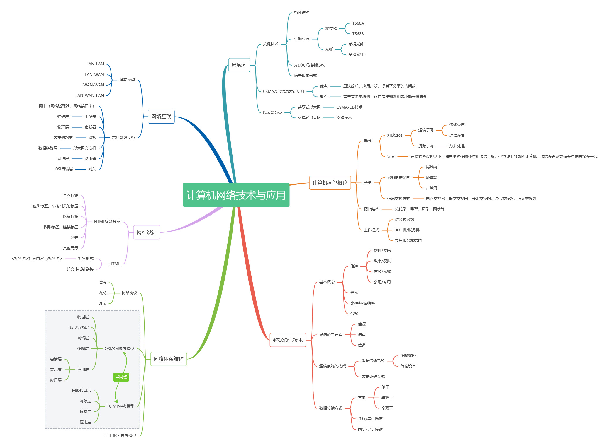

方法一:制作思维导图
学会制作思维导图对于《计算机网络技术与应用》这门课程十分重要，因为这门课程的知识点十分的多且繁琐，这个时候就需要我们制作一张思维导图来将知识主干串联起来。制作思维导图时要注意，不能一股脑的将所有知识点罗列在上面，而应该忘记具体的知识点，重点将知识全部梳理一遍。

方法二:实践出真知
《计算机网络技术与应用》这门课程具有很强的实践性，我们课上所学到的知识都可以在现实生活中找到对应，而且这些物品离我们的生活非常近。我们完全可以利用身边的资源来丰富我们的知识，强化我们在课程中的学习效果。简单来说，我们就可以利用我们的计算机来了解网络技术，在具体的实操中，发现自己的不足并完善。
方法三:学会向AI求助
《计算机网络技术与应用》这门课程与AI的关系十分密切，并且随着当代AI的高速发展，AI在即时处理问题这一方面已经足够满足我们的日常使用了。当我们在实操中遇到问题时，我们完全可以向AI寻求帮助，通过看AI怎么解决这个问题来增长自己的经验。同时，因为AI具备教师和同学所不具有的随时性，我们向AI求助不必担心问题的解决不及时。因此，向AI求助无疑是一个高效的方法。
好啦，今天的分享就到这啦